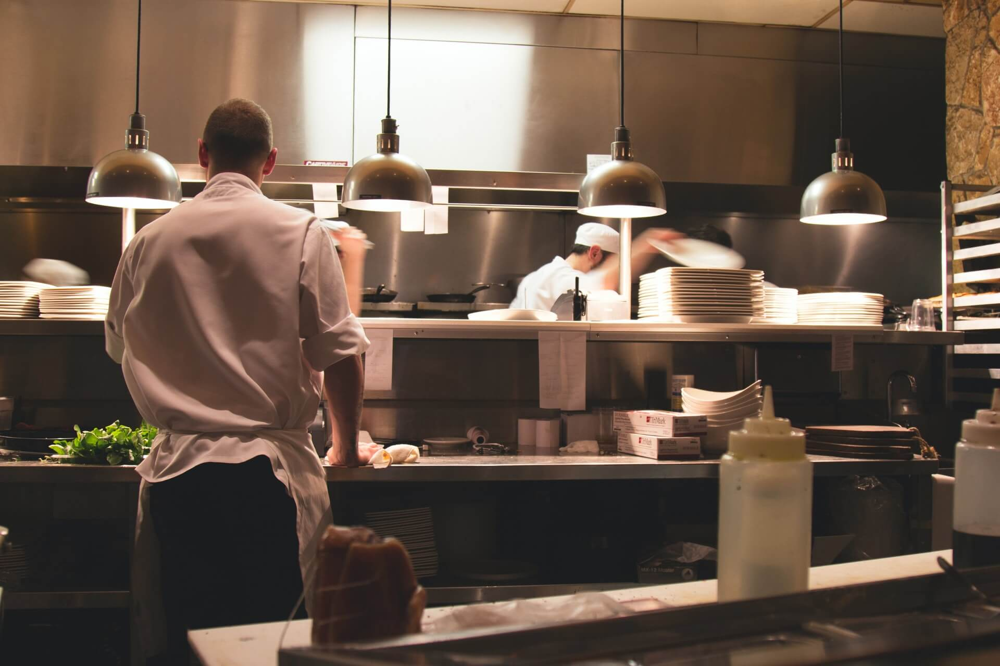

Кулинарен съюз „Нещо вкусно“

Светът на кулинарията
Запознайте се с вкусът на кухни в световен мащаб и се отдайте на
уникални кулинарни изживявания от най-високо качество.

Професионалисти и любители
Нашите селекции са подбрани от гласове с еднаква тежест - било то
майстори в сферата или просто хора, наслаждавайки се на добрата
кухня.
Творчество в кухнята
Допринесете към обогатяването на кулинарния небосвод с предложения,
останали в съзнанието Ви или с ваши лични ястия, достойни да бъдат
споделени и затвърдени.
За нас
Създадена през 2016 година, "Нещо вкусно" е проект на няколко любители
на кулинарията със скромни цели - съвместното запознаване с нови
кулинарни изживявания. С течение на времето и разширяването на кръга,
организацията се разраства и си поставя за цел не само изучаването на
многобройните кухни от света, а и тяхното представяне в България.
Ситуиран в старата столица, Велико Търново, нашият основен щаб е
отправна точка за световните вкусове, където можете да изпробвате
подбраните от нас ястия за определен период на годината или конкретно
събитие/сезон.
Нашите партньори
"Нещо вкусно" гордо може да заяви многообразният си диапазон от
партньори, съгласили се да станат част от колектива или да допринесат
към осъществяването на нашите цели. Само за последните 3 години, можем
да се похвалим с цели 120 нови ресторанти, сред които присъстват и
такива с награди "Мишелин", включили се към нашата кауза. С тях нашата
обща бройка партньори се разширява до повече от 500. Подбирайки само
най-добрите, било то хора с години опит в сферата, или нови и
изграващи таланти, нашето разнообразие от предложения и вкусове идват
директно от тези, които обичат това което правят.
Стани част от нас
Притежаваш свой собствен кулинарен кът или си част от ресторант с
талантливи колеги, готови да обострят своите умения и да научат повече
за света на кулинарията? Можеш да станеш част от нас като ни
представиш най-доброто от себе си в кухнята, затвърждавайки рецептите
си в нашите селекции, или просто допринесеш с твои лични вкусни
преживявания, които смяташ, че заслужават да присъстват при нас и
трябва да бъдат показани на България.